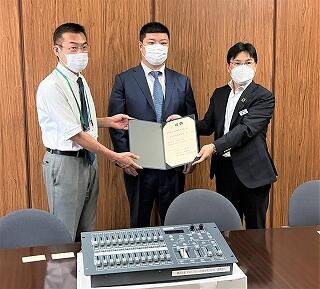

SAGANO BLOG
- >
- SAGANO BLOG
- >
- 日々の様子
{kind=link}
2022年07月28日
前期補習も終わり、登校をする生徒もまばら
今、様々なところでととのえています。
本校技術職員の手による剪定 （樹木を斉える）
{kind=link}
ストレッチ（練習前に心身を調える）
{kind=link}
伝統工芸染色実習室・陶芸実習室（心を整える）
{kind=link}
{kind=link}
自習室で苦手の克服 （教科のバランスを調える）
{kind=link}
2022年07月27日
夏季補習（前期）（１・２年生必修補習、３年生進学補習）もひと区切り
受験勉強に「盛り」があるとすれば、今は「走り」とでもいうべき時期でしょうか。
現役生が夏休みの学習を進めるうえで大切なことは、焦らず、じっくりと教材と向き合い、やりきること
例えば世界史、昔から、３年の夏は授業の進度を飛び越えて、教科書を最後までやりきろう（教科書の通読）、ということが言われています。今でも受験雑誌、ネットなどで散見されます。そのこと自身は誤りではないのですが、数学、英語、理科など他教科もバランスよく学ばねばなりません。歴史が不安な人はその不安感を取り除くためには、既に学んだことを定着させることが肝心です。先取を優先するのか、既習事項をやりきるのか、迷った挙句、詰め込みすぎの無理な計画になり、どちらもやり切れずに終わる。よくある失敗です。
様々なメディアから伝わる情報はそれ自身が正しくても、その教科単独のことであり、全体を見たとき、学力伸長の妨げとなることが多々あります。
「絶対〇〇をやるべき」の「絶対」は個人的な見解であり、みんなに当てはまるというものではありません。絶対的な正解は存在しません。
あれこれ欲張らず、今やり始めていることを丁寧にやりきってください。やりきってから次のことを考えましょう。
「走り」は試行錯誤ができる時期です。
{kind=link}
{kind=link}
2022年07月26日
『待ち時間』
生徒昇降口を上がったところで、ある男性保護者の方から「これがブログに上がっていた額ですか？」と声をかけられました。ブログを読んでいただいていることに御礼を述べると、「さっき初めて自習室を見てきました。外からだったので消しゴムかす入れは見えませんでしたが」と続きました。
大感激です。そこまで読んで（心に留めて）いただいて。熱心なフォロワーさんに出会った様な気持ち（錯覚）になりました。
聞けば面談時間を間違えてこられたとのこと。時間潰しでした。
担任との面談を前にそのゆとり、家庭でのお子さんとのほどよい距離感が窺えました。
『どちら派』
面談には二者面談と三者面談があります。保護者様との二者面談では、担任も保護者様も本音で話しやすく、得ることも多い反面、会話が途切れ途切れになったりすることも。
普段はお母様が面談にいらしていたのですが、仕事の関係で急遽お父様に交代、事前の予備知識が少なく、担任と向き合い、押し黙ったままの時間が続きます。担任としてはいろいろ聞き出そうと質問をするのですが、あまり会話は弾まず。
面談あるあるです。
三者面談は特に3年生など、生徒の意向を保護者様・担任と三人で共有し、同じ方向に向かうことを確認する大切な役割があります。一方、三者の宿命、それぞれが1：2の不利な状況にならないように駆け引きが始まることも。
生徒は自分の希望を通すために担任か保護者様かどちらかとの共同戦線を画策します。保護者様も毎日同じことを言い疲れているので、今日は担任から厳しく言ってもらおうと振る舞われることがよくあり、担任も駆け引きに引き込まれます。
我々も時節に依りますが。それぞれ二者、三者どちらの面談が良いか、意見が分かれるところです。何かに気づき、行動につながれば形態は厭いません。
担任として大切なことは、しっかり生徒を観ること、そしてその観察結果を折に触れ本人に伝えること。それは賞賛であったり、修正を促す指導であったり。その際面談はとても貴重な機会となります。
保護者の皆様、酷暑の中の来校、あらためて御礼申し上げます。
{kind=link}
{kind=link}
{kind=link}
2022年07月25日
先日夏季大会を終え、新チーム引継ぎのミーティングを終えたばかり。
後輩たちの練習開始前に今まで使用していた場所を掃除している３年生がいました。
聞けば例年このタイミングで「引退」する３年生がみんなで掃除をしているとか
今年はいろんな事情で集まれそうにないので、一人で来ました、とのこと
後輩へのエールと、自分に区切りをつける（次に向かう）
そんな背中でした。
{kind=link}
{kind=link}
2022年07月22日
２年生へ「毎日大変だけどがんばって！ベストを尽くしてください。一人一人が私にとって特別な存在です。」
先日onlineで開催された離任式での彼女のスピーチです。生徒思いの温かさを感じとることができます。
この度、3年間お世話になったALT（外国語指導助手）のOlthaus Casey先生が任期を終えられ、帰国されます。そのことを知った２年生が、先生の最後の授業で色紙を贈呈したいと準備をしてきたようです。
入学以来、厳しくも温かい指導を受けてきた生徒たちがそれぞれの思いを認（したた）めました。
彼ら、彼女らの思いはあふれ、1冊に収まらず2分冊に。
サプライズ演出の主役、色紙贈呈役選出も争奪のじゃんけんが行われたとか。生徒たちの先生への思いが伝わります。
彼らが１年生の時お世話になった科目名は「Global Interaction」
まさにお互いが影響を及ぼし合い、生徒たちはもちろんのこと、先生自身も大いに学ばれたのだと、生徒の行動から推察できます。
{kind=link}
{kind=link}
穏やかな瞳でいつも生徒を見守ってくださっていたという印象です。
職員室横、数学科のホワイトボードに並ぶデコレーションは彼女の制作です。いつも工夫を凝らしてくださっていました。
（いつの間にか後任の方へのウェルカムボードに模様替えされていました。お人柄が窺えます。）
{kind=link}
彼女は"美しい川"オハイオ御出身です。映画「ショーシャンクの空に」などの牧歌的で雰囲気のある映像はオハイオです。
美しい邦に戻られた後は、大学院で御自身の研究（「医学史におけるジェンダー問題」）を再開されると伺っています。
勤勉、努力家、そして何より、謙虚で御家族をこよなく愛する愛情豊かな方でした。（本校英語科教員談）
惜別の辞
「失敗をおそれないで」
「楽しむことも忘れずに」
あまりにも素敵な笑顔、心に残るメッセージ
離任式でのメッセージ全文（要約）です。
「他国で生活する際には様々な困難がつきものですが、、みなさんがとても親切でたくさん私を助けてくれたので、私のここでの生活は過ごしやすいものになりました、皆さんのそういった行動はまさにGood Global Citizenのとる行動です。海外に行かなくてもGood Global Citizenになれるんです。
私は嵯峨野高校に赴任できたことを幸運だったと毎日感じていました。本当にありがとうございました。本来ならみなさんひとりひとりとお話したいのですが、それはかなわないのでここであいさつさせていただきます。
3年生、卒業して自分とは違う価値観を持つ人々とも出会うと思います。そういう時こそどんどん視野を広げてください。
そして毎日学び続けてください。
2年生、疲れているようですが、頑張ってベストを尽くしてください。
あなたたち一人ひとりが私にとっては特別な存在です。あなたたちに会えなくなるのはとても寂しいです。
1年生、過ごした時間は短いものでしたが、これからGlobal Interactionという授業でたくさん学んでください。
そして全校の皆さんに。皆さんは本当に勤勉です。すばらしいことです。
でも楽しむことも忘れないで。そして、間違えを恐れずに挑戦し続けてください。」
{kind=link}
***** *** ***** *** *****
勧君金屈卮
満酌不須辞
花発多風雨
人生足別離
『勧酒』于武陵
2022年07月21日
令和4年７月21日（木） 応接室にて「寄附物品の贈呈式」を行いました。
本校、第59期卒業生 山田侑司氏（株式会社FSC社 社長）から、滋賀銀行 SDGs 私募債「つながり」による「体育館仮設舞台照明調光装置（調光器）」を御寄付いだきました。
調光器は、とこのは祭 文化の部のステージ発表等舞台演出には欠かせない備品です。数年前に故障して以来、嵯峨野高校PTAの援助により毎年、機材レンタルでしのいできました。
今年度より、機材レンタルの心配をせずに「とこのは祭 文化の部」を実施することができます。
昨年度は、とこのは祭 文化の部が新型コロナウィルス感染症の拡大により実施できませんでした。
今年度は、無事実施できることを心から願います。
大切に使用させていただきます。
卒業生の山田様の嵯峨野高校への想い、滋賀銀行様の御協力に感謝申し上げます。

{kind=link}
左から、橋長校長、山田社長、梶本支店長
{kind=link}
{kind=link}
{kind=link}
2022年07月19日
{kind=link}
祈りは通じました。２日目の朝の空です。
中学生、保護者の皆さんの日程調整のしやすさや、密 回避のため、２日間で6回の中学生対象学校説明会を開催しました。
今年も1,300名を越えるお申し込みをいただき、100名越の在校生と70名超の教職員とで説明会を運営しました。
嵯峨野高校らしく、誠実に、丁寧にお迎えできていれば、と願っているところです。
濃厚接触者になられたり、御本人や御家族の体調不良で急遽欠席せざるを得なくなったときも、事前連絡いただきましたこと、その当方への思いやりにあらためて御礼申し上げます。
また、当日会場や、終了後のアンケートを通じて、いただいたたくさんの温かい言葉を生徒、教職員で共有させていただきました。たいへん励みとなっています。
本当にありがとうございました。
今朝は大雨の音で目が覚めました。次回9月の進学説明会案内書の印刷が仕上がってきます。次のお出会いに向けての準備を始動します。
2022年07月16日
学校説明会初日の再会
何年も前、前任校に勤務していた頃の高校生が、今回は保護者の立場で御参加いただいた方 （感慨深いものがあります。）
数年前、御兄姉が本校に在籍され、担任面談で御出会いして以来の来校となる方 （感謝です。）
数日前、市内のある中学校へ「出前授業」に出かけたとき、その授業を受けられ、今日わざわざ御礼を述べに来てくださった方 （感激です。）
不快指数が高い天候下の開催となりましたが、心地よい疲れとなりました。本日御参加いただいた方々、ありがとうございました。
17日御参加予定の方々、お気をつけてお越しください。

2022年07月07日
本日は七夕。図書館には、天の川が流れています。
図書委員が作った七夕飾りと共に、短冊が飾られています。みなさんの願いが叶いますように。
{kind=link}
天の川の下にて、2年生アカデミックラボでの様子です。
探究テーマのアイデアや参考資料を探したり、また、図書館上階のロフトでは、グループでの話し合いもおこなわれています。
{kind=link}
天の川は期間限定展示ですが、常設の展示コーナーをひとつ紹介します。
「ORIGAMI MUSEUM」です。生徒の作品が自由に飾られています。
{kind=link}
{kind=link}
折紙の達人「オリガミマスター」たちが卒業した後、一時不在の期間もありましたが、図書館の願いが叶い、昨年度から新世代オリガミマスターたちが登場しました！今年度も新メンバーが加わりました（右側の作品です）。来館の際には、ぜひご覧ください。
2022年07月04日
{kind=link}
このページはスマホでご覧の場合に、文に乱れが生じる可能性があります。御容赦ください。
毎年この時季、３年生の進路について大切な会議が開かれます。
３年生の教科担当者が集まり、生徒ひとりひとりの現状を確認し
今後を考える会議です。
本校がこの会議で最も大切にしていることは、生徒の希望に寄り添うこと。
合格可能性をのみ議論するのではなく、志望学部、志望大学の確認、そこに到達するには
今、何が必要か、何をせねばならないかを、それぞれの教科の立場から意見を出し合います。
HR担任からは面談での様子や勉強以外の側面からの情報提供も。
日常の学習状況に加え、模擬試験も重要なデータですが、単にA判定、C判定といった記号のみを観るのではなく、一人一人の顔を思い浮かべて、多角的に検討し、情報を共有していきます。
教科担当からは、今のままで、といった頼もしい意見が出ることもあれば、現時点では○○が弱い、△△を使って○○に取り組むべき、また、やや難問に取り組みすぎ、基礎をしっかりやり直す必要があるのではといった改善点の提案、あるいは本当にその志望に向けて努力ができているのか、自分自身と向き合うことができているか、といったところまで掘り下げることもあります。忘れてはいけないことは、諦めずに生徒の可能性を模索すること。
ベテラン教員からは、目標に到達するための様々な選択肢の紹介や指導方法の助言、さらには家庭との意見のすりあわせの重要性、といった経験談が語られ、さながら教員研修の場にもなります。
府下全域はおろか他府県からも偶然に集い、多様なキャリア、経験を重ねてきた教員が集団となって、よりよい方向を導き出す。嵯峨野高校の教育のありかたの肝が垣間見える場です。
一人の教員が一クラスを抱え込み、独自の指導をするのではなく、全教科担当が８クラスの生徒たちに対して、フラットに様々な視点からアプローチを試みる、そんな学校でありたいと思っています。
{kind=link}
2022年06月29日
１年生が、待ちに待った「学習用タブレット端末」を手にしました。さっそくWiFiにつなぎ、学習用アプリをインストールしました。今後平常の授業のみならず、探究活動や部活動など様々な場面で学習用タブレット端末が活用されていくことと思います。協働的な学習や、海外など遠隔地をつないでの学習では、大きな威力を発揮することでしょう。
{kind=link}
{kind=link}
{kind=link}
{kind=link}
2022年06月24日
職員室横のホールに１枚のホワイトボードがあります。
８年ほど前から通りすがりの生徒たちに数学の話題を提供するために、定期的に内容を更新しています。
「４つの４で１から100までの数をつくる」
{kind=link}
↑いくつかつくるのが難しい数があり、必死で考える生徒たち
何人もの生徒が夢中で取り組み、３日間で全部完成しました。
「見た目はややこしいが、値は０になる式を書こう」
{kind=link}
↑誰かが書いた式に対して、これはよい、これはよくない、とそれぞれのセンスで評価して盛り上がっている集団
いくつか書き足して去っていきました。
数学を楽しんでくれる生徒たちのために、また次のネタを考えます。
2022年06月24日
朝から蒸し暑い日が続きます。まだ６月だというのに。
熱中症を防ぐこと、感染予防、さらに社会情勢による電力事情
考えねばならないことはたくさんあります。
「政治経済」の学びの中で経済学とはトレードオフの関係にある事柄の中で最善を見つけ出すこと、とあります。
決して何かを犠牲にすることなく、最適なバランスを見つけ出さねばなりません。
もちろん健康第一であることは言うまでもないことです。
{kind=link}
{kind=link}
2022年06月20日
先週末は南丹市のある中学校へ
この日曜日は京都市乙訓地域公立校校合同説明会
そして今日は京都市内の中学校において中学3年生・保護者様対象説明会
たくさんの中学3年生および保護者の方とお出合いしました。部活動の様子、授業内容、選抜方法、学校生活など高校を見る視点は人それぞれ。
嵯峨野高校は全教職員の力を合わせて、中学生の皆さんの、よりよい進路選択に向けて取り組んでいます。今後もいくつかの中学校からの高校訪問も予定されています。出前授業にもお邪魔します。
中学生の皆さんにとって、進路に関する不安感が少しでも払拭できることを願っています。そして願わくは、本校が選択肢の一つに加えていただければ、嘘偽りない心境です。
{kind=link}
{kind=link}
2022年06月14日
いつもの聞きなれたチャイム、「ウェストミンスターの鐘」の調子が悪くなったようです。原因は今のところ不明です。
新校舎が建設されて25年は経ちます。様々な機器が故障するのは無理もありません。昨年は空調機器が新しくなりました。中央のトイレもリフォームされ快適な空間です。
今回も修理・更新の手立てを講ずることはもちろんですが、何せシーリングがあります。当面は知恵を絞って、この状況を克服しなければなりません。
そのためには、生徒たちが、（チャイムが鳴らなくても）自主的に行動できるか？集団の質が試されるときかもしれません。
教室に向かうと、係の生徒が黒板にプロジェクター用スクリーンを貼ってくれている姿が見えました。
教師の心配は杞憂に終わったようです。
{kind=link}
{kind=link}
{kind=link}
{kind=link}
{kind=link}
〒616-8226
京都市右京区常盤段ノ上町15番地
TEL 075-871-0723 FAX 075-871-0724
E-mail [email protected]
Copyright (C) 京都府立嵯峨野高等学校 All Rights Reserved.